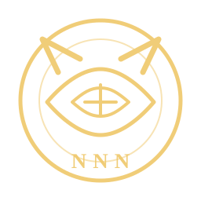

NNNとは
NNNは「ネコ・ネコ・ネットワーク」の略称です。猫たちが「この人間なら使えそう」「この家は居心地がよさそう」と判断した情報を、気配・視線・足音・深夜のパトロールなどを通じて共有する極秘連絡網です。
存在は公には確認されていませんが、猫好きのあいだではたびたびその痕跡が観測されています。たとえば、道端の猫と目が合った瞬間、あなたの情報はどこかの窓辺に転送されているかもしれません。

ABOUT NNN
NNN――それは「ネコ・ネコ・ネットワーク」。猫たちが静かに築き上げた、気まぐれで極秘な監視と選定の連絡網です。
NNNは「ネコ・ネコ・ネットワーク」の略称です。猫たちが「この人間なら使えそう」「この家は居心地がよさそう」と判断した情報を、気配・視線・足音・深夜のパトロールなどを通じて共有する極秘連絡網です。
存在は公には確認されていませんが、猫好きのあいだではたびたびその痕跡が観測されています。たとえば、道端の猫と目が合った瞬間、あなたの情報はどこかの窓辺に転送されているかもしれません。
NNNの最終目的は「人類総下僕化計画」です。ただし、力による支配ではありません。気づけばごはん係になっている、気づけば寝床を明け渡している、気づけば写真フォルダが猫だらけになっている――そんな自然で平和的な下僕化を、世界規模でじわじわ進めています。